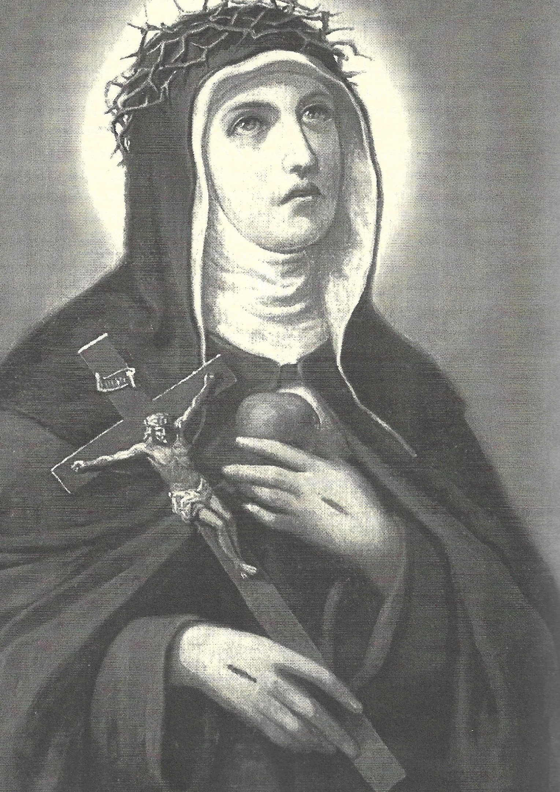

"SANTA VERÔNICA GIULIANI"





"APAIXONADA E CORAJOSAMENTE ACOLHEU O CÁLICE COM O SAGRADO SANGUE DE JESUS, E COM ESPÍRITO ABERTO SE DISPÔS A BEBÊ-LO. (ASSUMINDO OS FORTES SACRIFÍCIOS)
=ÍNDICE=
 -
"SEU NOME ANTECIPOU SUA VOCAÇÃO"
-
"SEU NOME ANTECIPOU SUA VOCAÇÃO"
-
"ÚLTIMAS NOTÍCIAS + CONVITE + E-MAIL"